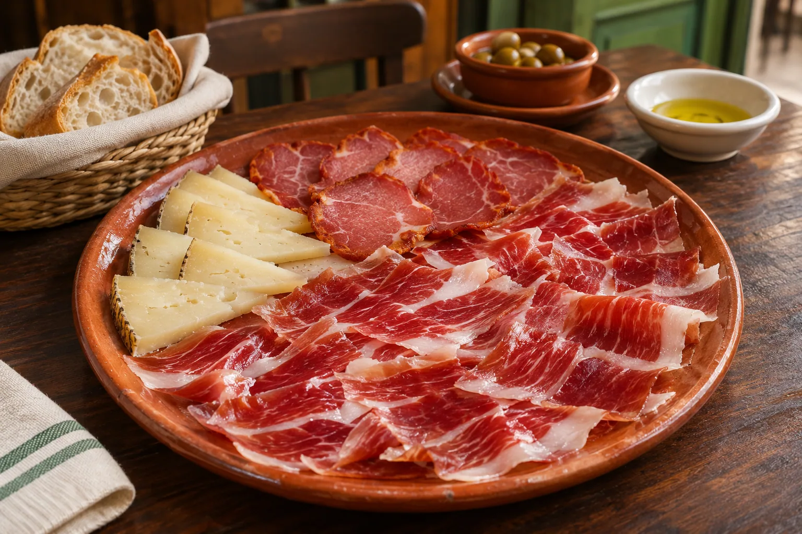
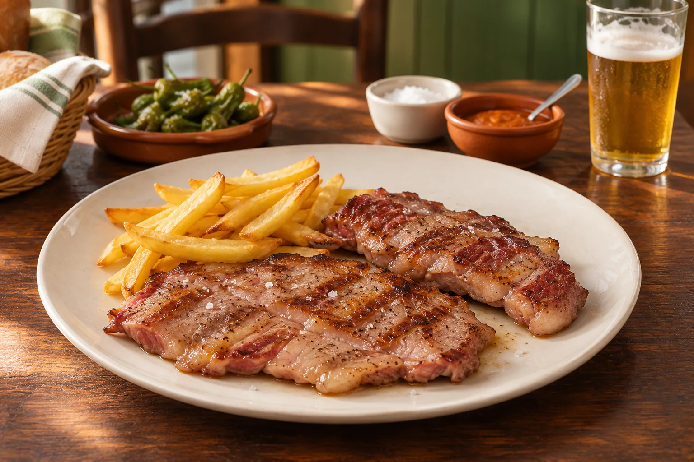
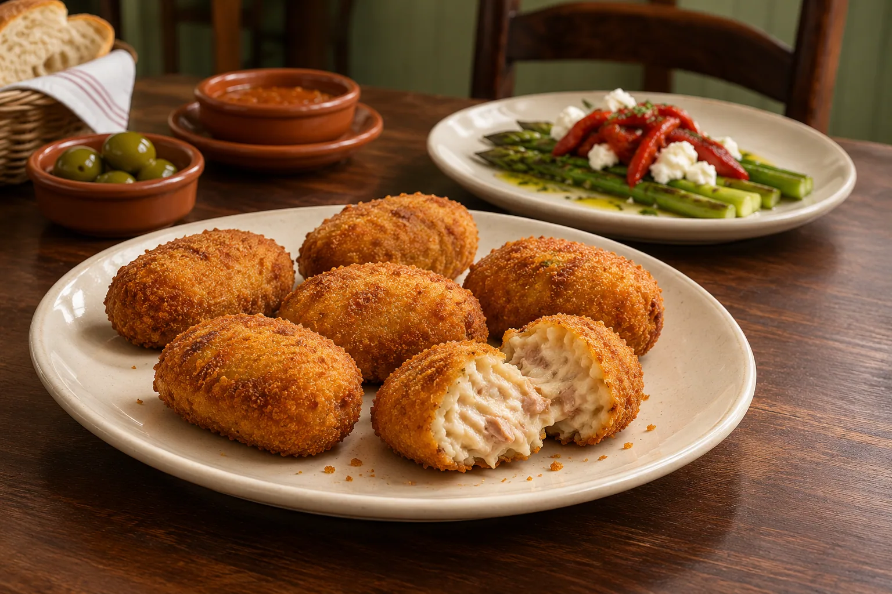

La cocina de La Despensa
La carta
de La Despensa.
Ibéricos, cocina de siempre y un final dulce.
Elige lo que te apetece compartir.



⌕
Precios transcritos de fotografías públicas de la carta. Confirma la carta vigente con el restaurante.
Queso curado 100% oveja
16,50 €Caña de lomo ibérica de bellota
19,50 €Caballa
10,50 €Tomate del huerto, caballa, aceite de oliva virgen extra y sal gruesa
Ensaladilla rusa de pulpo a la gallega
10,50 €Croquetas de cocido
13,50 €Paté del nuestro
14,50 €Mojama de atún extra de Barbate
13,50 €Lomo de atún ahumado con tomate fresco
14,50 €Flamenquín La Despensa
22,50 €Huevos rotos con jamón ibérico
13,50 €Revuelto de morcilla de Burgos (arroz) con langostinos
14,50 €Anchoas del Cantábrico calibre 00
3,00 € / unidadSalmón con salsa de eneldo
19,50 €Merluza La Despensa
18,50 €Salsa con langostinos y almejas
Bacalao a la riojana
17,50 €Secreto ibérico
19,50 €Solomillo ibérico
17,50 €Presa ibérica
19,50 €Entrecot
24,50 €Chuletón
26,50 €Brochetón de pollo con verduras
17,50 €Salmón con guacamole
11,50 €Tostón de La Despensa
13,50 €Escalope de pollo
9,50 €Tarta de queso
6,50 €Tarta de tres chocolates
6,50 €Brownie con helado de vainilla
7,00 €Coulant de chocolate con helado de vainilla
5,50 €Tarta de zanahoria
6,50 €Bola de helado de vainilla o chocolate
2,50 € / unidadPan por persona
1,80 €Todos nuestros platos
La carta, al completo.
01
Ibéricos y quesos
- 24,50 €
Jamón ibérico de bellota D.O. Los Pedroches, Córdoba
Media ración · 19,50 € - 19,50 €
Lomito ibérico de bellota
- 19,50 €
Caña de lomo ibérica de bellota
- 12,50 €
Salchichón ibérico de bellota
- 12,50 €
Chorizo ibérico de bellota
- 22,50 €
Jamón ibérico de bellota y queso curado 100% oveja
- Consultar
Combinado ibérico de bellota
Caña de lomo, salchichón, chorizo y jamón
- 16,50 €
Queso curado 100% oveja
Media ración · 9,50 €
02
Ensaladas
- 9,50 €
Ensaladilla rusa estilo Huelva
Media ración · 7,50 € - 10,50 €
Ensaladilla rusa de pulpo a la gallega
Media ración · 8,50 € - 8,50 €
Básica
Tomate del huerto, aceite de oliva virgen extra y sal gruesa
- 10,50 €
Caballa
Tomate del huerto, caballa, aceite de oliva virgen extra y sal gruesa
- 12,50 €
La Despensa
Cogollos con revuelto de ahumados, queso curado, frutos rojos y mix de pipas
- 12,50 €
Ibérica
Cogollos con jamón ibérico, crema de queso, pasas y salsa vinagreta
- 12,50 €
Salmón
Cogollos, salmón, queso de cabra, pasas, tomate seco, eneldo y vinagre de Módena
03
Delicatessen
- 9,50 €
Lomo de atún en manteca ibérica
- 13,50 €
Mojama de atún extra de Barbate
- 14,50 €
Lomo de atún ahumado con tomate fresco
- 14,50 €
Paté del nuestro
Media ración · 8,50 € - 13,50 €
Croquetas de cocido
Media ración · 7,50 € - 14,50 €
Croquetas de rabo de toro
Media ración · 8,50 € - 22,50 €
Flamenquín La Despensa
- 12,50 €
Espárragos en aceite de oliva virgen extra con queso de cabra y pimiento caramelizado
- 13,50 €
Huevos rotos con jamón ibérico
- 14,50 €
Revuelto de morcilla de Burgos (arroz) con langostinos
- 3,00 €/unidad
Anchoas del Cantábrico calibre 00
04
Pescados
- 18,50 €
Merluza La Despensa
Salsa con langostinos y almejas
- 19,50 €
Salmón con salsa de eneldo
- 17,50 €
Bacalao a la riojana
05
Cerdo ibérico Los Pedroches (Córdoba)
Con guarnición a elegir: patatas fritas o verduras.
- 19,50 €
Presa ibérica
- 19,50 €
Secreto ibérico
- 19,50 €
Pluma ibérica
- 17,50 €
Solomillo ibérico
- 32,50 €
Surtido de carnes ibéricas
06
Ternera del norte
- 26,50 €
Chuletón
- 24,50 €
Entrecot
- 27,50 €
Solomillo
07
Brochetones y pinchitos
- 17,50 €
Brochetón de pollo con verduras
- 19,50 €
Brochetón de solomillo de cerdo ibérico
- 20,50 €
Brochetón mixto
Ternera, pollo y cerdo ibérico
- 16,50 €
Pinchitos de pluma ibérica
2 unidades
- 14,50 €
Pinchitos de pollo del corral
2 unidades
- 12,50 €
Pechuga de pollo
08
Alpargatas
Con aceite de oliva y tomate triturado
- 11,50 €
Salmón con guacamole
- 9,50 €
Jamón ibérico
- 10,50 €
Jamón ibérico y huevo de codorniz
- 13,50 €
Tostón de La Despensa
- 11,50 €
Láminas de secreto con paté, crema de queso y cebolla caramelizada
09
Especial niños
- 9,50 €
Escalope de pollo
- 7,50 €
Patatas fritas con huevo
- 8,50 €
Croquetas de cocido
10
Postres
- 6,50 €
Tarta de queso
- 6,50 €
Tarta de tres chocolates
- 7,00 €
Brownie con helado de vainilla
- 5,50 €
Coulant de chocolate con helado de vainilla
- 6,50 €
Tarta de zanahoria
- 2,50 €/unidad
Bola de helado de vainilla o chocolate
11
Pan y acompañamientos
- 1,80 €
Pan por persona
- 2,10 €
Pan sin gluten
- 1,20 €
Bolsa extra de piquitos
- 2,50 €
Suplemento salsas caseras
Chimichurri, pimienta, champiñones, roquefort, ali oli
- 5,50 €
Extra patatas fritas caseras
- 4,50 €
Extra de verduras
Tu mesa, con tranquilidad.
Si tienes alguna alergia o intolerancia, consulta al personal antes de pedir.
Consultar al restauranteCarta consultada el 05/11/2026 en fotografías publicadas del restaurante. El precio del combinado ibérico requiere confirmación.
Siempre queda un hueco
El final,
que sea dulce.
Tarta de queso, tres chocolates o un brownie con helado. Elige cómo terminar la sobremesa.
Descubre nuestros postresCalle San Antonio · Fuengirola
Tu próxima mesa
Nos vemos
en La Despensa.
Calle San Antonio, 17
Fuengirola, Málaga
Consulta nuestros horarios
- Miércoles — sábado
- 13:00–16:30
20:00–00:00 - Domingo
- 13:30–16:30
- Lunes y martes
- Cerrado